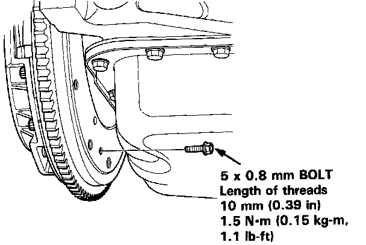
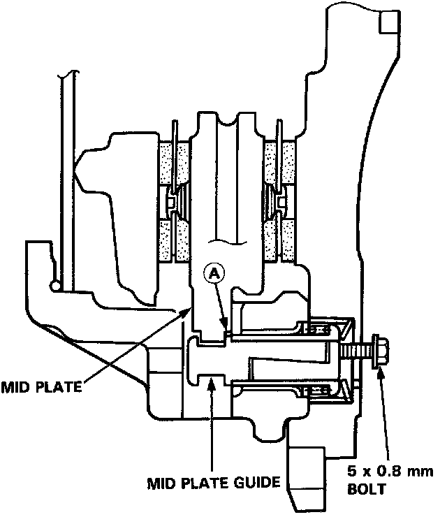
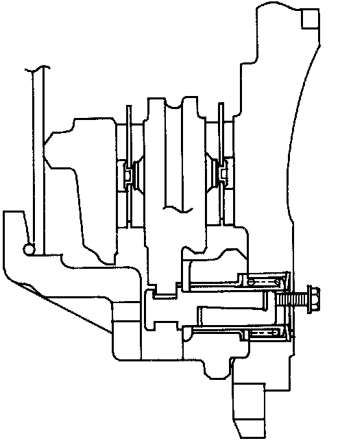
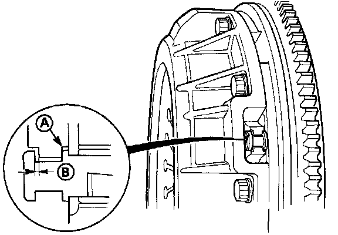

Mid Plate Guide Initialization
MID PLATE GUIDE INITIALIZATIONNOTE:
^ If the pressure plate mounting bolts are unscrewed, the mid plate guide must be initialized.
^ Initialize after tightening the pressure plate mount bolts.


1. Screw the 5 mm bolt into the back of the flywheel until it just touches the mid plate guide.

2. Screw the 5 mm bolt in 15O - 21O° further.

3. Make sure that:
^ The mid plate guide touches the back of the mid plate (A).
^ There is 0.25 - 0.40 mm (0.010 - 0.016 in) clearance between the mid plate guide and the front of the mid plate (B).
4. Initialize the remaining mid plate guides as described above, then remove the 5 mm bolt.